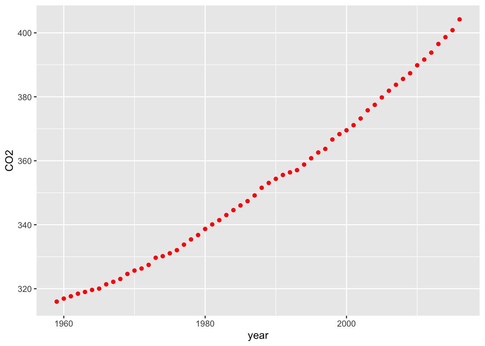
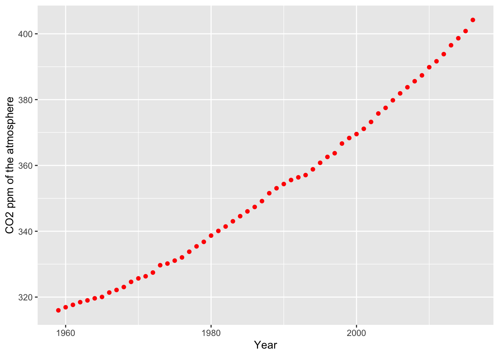
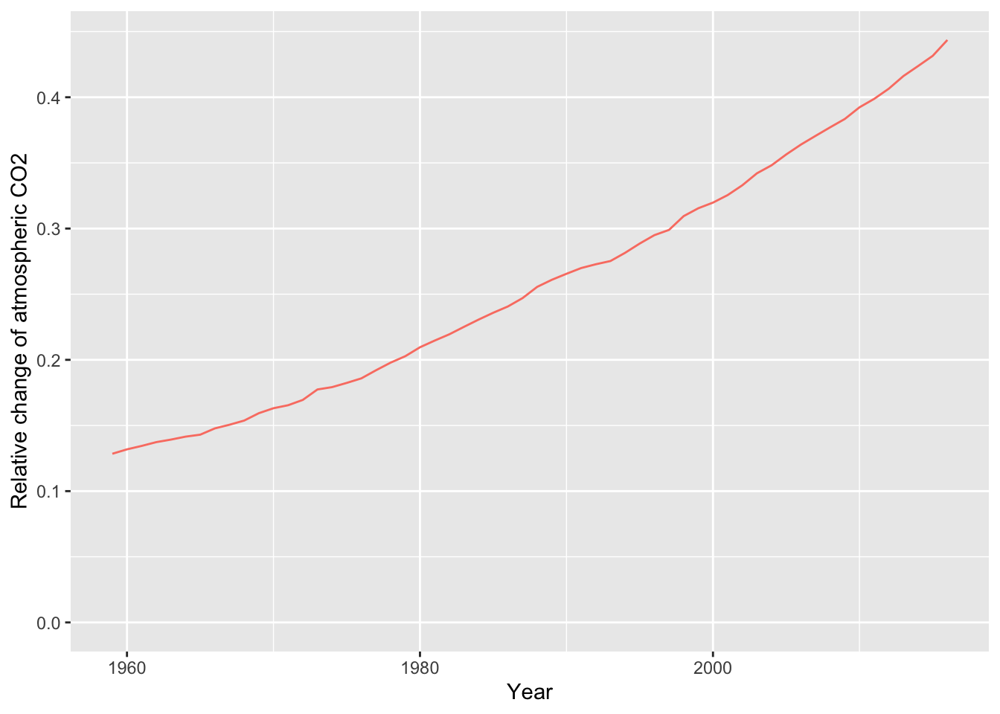
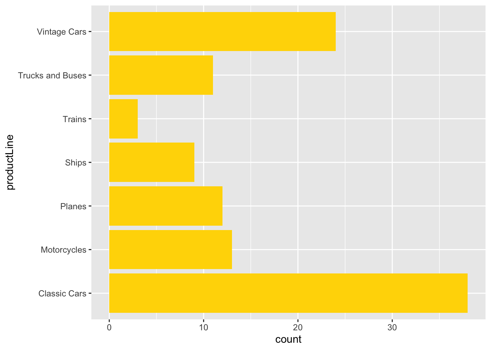
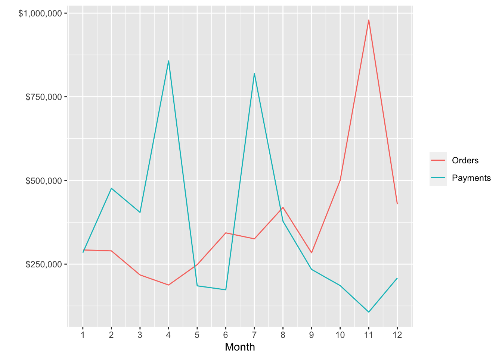
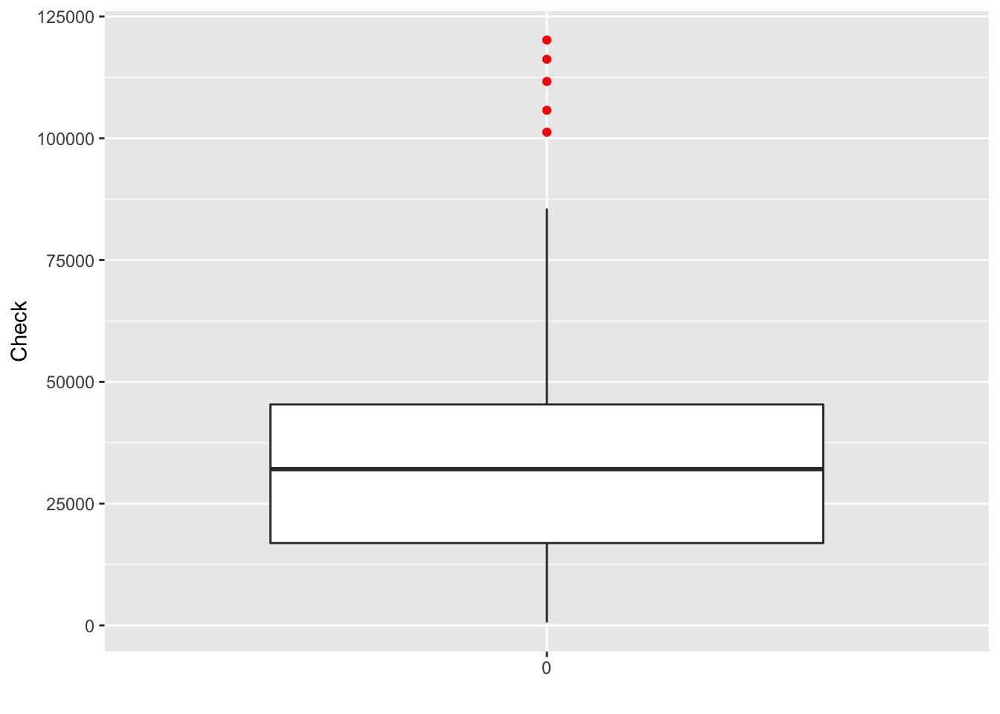

Chapter 16 Data visualization
The commonality between science and art is in trying to see profoundly - to develop strategies of seeing and showing.
Edward Tufte, The Visual Display of Quantitative Information
Learning objectives
Students completing this chapter will:
Understand the principles of the grammar of graphics;
Be able to use ggplot2 to create common business graphics;
Be able to select data from a database for graphic creation;
Be able to depict locations on a Google map.
Visual processing
Humans are particularly skilled at processing visual information because it is an innate capability, compared to reading which is a learned skill. When we evolved on the Savannah of Africa, we had to be adept at processing visual information (e.g., recognizing danger) and deciding on the right course of action (fight or flight). Our ancestors were those who were efficient visual processors and quickly detected threats and used this information to make effective decisions. They selected actions that led to survival. Those who were inefficient visual information processors did not survive to reproduce. Even those with good visual skills failed to propagate if they made poor decisions relative to detected dangers. Consequently, we should seek opportunities to present information visually and play to our evolved strength. As people vary in their preference for visual and textual information, it often makes sense to support both types of reporting.
In order to learn how to visualize data, you need to become familiar with the grammar of graphics and ggplot2 (an R extension for graphics). In line with the learning of data modeling and SQL, we will take an intertwined spiral approach. First we will tackle the grammar of graphics (the abstract) and then move to ggplot2 (the concrete). You will also learn how to take the output of an SQL query and feed it directly into ggplot2. The end result will be a comprehensive set of practical skills for data visualization.
The grammar of graphics
A grammar is a system of rules for generating valid statements in a language. A grammar makes it possible for people to communicate accurately and concisely. English has a rather complex grammar, as do most languages. In contrast, computer-related languages, such as SQL, have a relatively simple grammar because they are carefully designed for expressive power, consistency, and ease of use. Each of the dialects of data modeling also has a grammar, and each of these grammars is quite similar in that they all have the same foundational elements: entities, attributes, identifiers, and relationships.
A grammar has been designed by Wilkinson50 for creating graphics to enhance their expressiveness and comprehensiveness. From a mathematical perspective, a graph is a set of points. A graphic is a physical representation of a graph. Thus, a graph can have many physical representations, and one of the skills you need to gain is to be able to judge what is a meaningful graphic for your clients. A grammar for graphics provides you with many ways of creating a graphic, just as the grammar of English gives you many ways of writing a sentence. Of course, we differ in our ability to convey information in English. Similarly, we also differ in our skills in representing a graph in a visual format. The aesthetic attributes of a graph determine its ability to convey information. For a graphic, aesthetics are specified by elements such as size and color. One of the most applauded graphics is Minard’s drawing in 1861 of Napoleon’s advance on and retreat from Russia during 1812. The dominating aspect of the graphic is the dwindling size of the French army as it battled winter, disease, and the Russian army. The graph shows the size of the army, its location, and the direction of its movement. The temperature during the retreat is drawn at the bottom of graphic.
Charles Joseph Minard’s graphic of Napoleon’s Russian expedition in 1812

Wilkinson’s grammar is based on six elements:
Data: a set of data operations that creates variables from datasets;
Trans: variable transformations;
Scale: scale transformations;
Coord: a coordinate system;
Element: a graph and its aesthetic attributes;
Guide: one or more guides.
Interest in the grammar of data visualization has increased in recent years because of the growth in data. There is ongoing search to find ways to reveal clearly the information in large data sets. Vega51 is a recent formulation building on Wilkinson’s work. In Vega, a visualization consists of basic properties of a graph (such as the width and height) and definitions of the data to visualize, scales for mapping to data to a visual form, axes for representing scales, and graphic marks (such as rectangles, circles, and arcs) for displaying the data.
ggplot2
ggplot2 is an implementation of Vega in R Because it is based on a grammar, ggplot2 is a very powerful graphics tool for creating both simple and complex graphs. It is well-suited for generating multi-layered graphs because of its grammatical foundation. As a result, using ggplot2 you specify a series of steps (think of them as sentences) to create a graphic (think of it as a paragraph) to visually convey your message. ggplot2 is a descendant of ggplot2 and adds new features to support interactive visualization using shiny, another R package, which we will cover later.
Data
Most structured data, which is what we require for graphing, are typically stored in spreadsheets or databases. In the prior chapter introducing R, you learned how to read a spreadsheet exported as a CSV file and access a database. These are also the skills you need for reading a file containing data to be visualized.
Transformation
A transformation converts data into a format suitable for the intended visualization. In this case, we want to depict the relative change in carbon levels since pre-industrial periods, when the value was 280 ppm. Here are sample R commands.
# compute a new column in carbon containing the relative change in CO2
carbon$relCO2 = (carbon$CO2-280)/280There are many ways that you might want to transform data. The preceding example just illustrates the general nature of a transformation. You can also think of SQL as a transformation process as it can compute new values from existing columns.
Coord
A coordinate system describes where things are located. A geopositioning system (GPS ) reading of latitude and longitude describes where you are on the surface of the globe. It is typically layered onto a map so you can see where you are relative to your current location. Most graphs are plotted on a two-dimensional (2D) grid with x (horizontal) and y (vertical) coordinates. ggplot2 currently supports six 2D coordinate systems, as shown in the following table. The default coordinate system for most packages is Cartesian.
Coordinate systems
| Name | Description |
|---|---|
| cartesian | Cartesian coordinates |
| equal | Equal scale Cartesian coordinates |
| flip | Flipped Cartesian coordinates |
| trans | Transformed Cartesian coordinates |
| map | Map projections |
| polar | Polar coordinates |
Element
An element is a graph and its attributes. Let’s start with a simple scatterplot of year against CO2 emissions. We do this in two steps applying the ggplot2 approach of building a graphic by adding layers. ggplot2 uses the pipe function to specify a linear sequence of processing.
The foundation is the ggplot2 function, which identifies the source of the data and what is to be plotted. In the following example, the file carbon is fed into the ggplot2 function, which selects year and CO2 as the x and y, respectively, dimensions of the graph
A graph consists of a number of layers, and in the following example the points layer receives the x and y values from ggplot2 and plots each pair of points with a red dot.
library(tidyverse)
url <- 'http://www.richardtwatson.com/data/carbon.txt'
carbon <- read_delim(url, delim = ',')## Rows: 58 Columns: 2## ── Column specification ────────────────────────────────────────────────────────
## Delimiter: ","
## dbl (2): year, CO2##
## ℹ Use `spec()` to retrieve the full column specification for this data.
## ℹ Specify the column types or set `show_col_types = FALSE` to quiet this message.# Select year(x) and CO2(y) to create a x-y point plot
# Specify red points, as you find that aesthetically pleasing
ggplot(carbon,aes(year,CO2)) + geom_point(color='red')
# Add some axes labels
# Notice how ‘+’ is used for commands that extend over one line
ggplot(carbon,aes(year,CO2)) + geom_point(color='red') +
xlab('Year') + ylab('CO2 ppm of the atmosphere')
Graphics appear under the Plots tab of the bottom right window. You can select the Export tab to save a graphic to a file or the clipboard. Also, notice that you can use left and right arrows of the Plots tab to cycle through graphics created in a session.
Zero point
It is usually a good idea to have a zero point for the y axis so you don’t distort the slope of the line. In the following example, ylim() sets the range for y.
library(tidyverse)
url <- 'http://www.richardtwatson.com/data/carbon.txt'
carbon <- read_delim(url, delim = ',')## Rows: 58 Columns: 2## ── Column specification ────────────────────────────────────────────────────────
## Delimiter: ","
## dbl (2): year, CO2##
## ℹ Use `spec()` to retrieve the full column specification for this data.
## ℹ Specify the column types or set `show_col_types = FALSE` to quiet this message.# compute a new column in carbon containing the relative change in CO2
carbon$relCO2 = (carbon$CO2-280)/280
ggplot(carbon,aes(year,relCO2)) + geom_line(color='salmon') +
xlab('Year') +
ylab('Relative change of atmospheric CO2') +
ylim(0,.5)
Axes and legends
Axes and legends are both forms of guides, which help the reader to understand a graphic. Readability enhancers such as axes, title, and tick marks are generated automatically based on the parameters specified in the ggplot2 command. You can override the defaults.
Let’s redo the graphic with the relative change since the beginning of industrialization in the mid 18th century, when the level of CO2 was around 280 ppm. This time, we will create a line plot. We also add some titles for the axes and specify a format of four consecutive digits for displaying a year on the x-axis. We also move or offset the title for the y-axis a bit to the left to improve readability.
# compute a new column containing the relative change in CO2
# compute a new column in carbon containing the relative change in CO2
carbon$relCO2 = (carbon$CO2-280)/280
ggplot(carbon,aes(year,relCO2)) + geom_line(color='salmon') +
xlab('Year') + ylab('Relative change of atmospheric CO2') + ylim(0,.5)
As the prior graphic shows, the present level of CO2 in the atmosphere is now above 40 percent higher than the pre-industrial period and is continuing to grow.
Guides
Axes and legends are both forms of guides, which help the reader to understand a graphic. In ggplot2, legends and axes are generated automatically based on the parameters specified in the ggplot2 command. You have the capability to override the defaults for axes, but the legend is quite fixed in its format.
In the following graphic, for each axis there is a label and there are tick marks with values so that you eyeball a point on the graphic for its x and y values. The legend enables you to determine which color, in this case, matches each year. A legend could also use shape (e.g., a diamond) and shape size to aid matching.

❓Skill builder
Create a line plot using the data in the following table.
year 1804 1927 1960 1974 1987 1999 2012 2027 2046 population (billions) 1 2 3 4 5 6 7 8 9
Some recipes
Learning the full power of ggplot2 is quite an undertaking, so here are a few recipes for visualizing data.
Histogram
Histograms are useful for showing the distribution of values in a single column. A histogram has a vertical orientation. The number of occurrences of a particular value in a column are automatically counted by the ggplot2 function. In the following sample code, we show the distribution of temperatures in Celsius for the Central Park temperature data. Notice that the Celsius conversion is rounded to an integer for plotting. Width specifies the size of the bin, which is two in this case. This means that the bin above the tick mark 10 contains all values in the range 9 to 11. There is online a list of names of colors you can use in ggplot2.52
library(measurements)
library(ggplot2)
library(readr)
url <- 'http://www.richardtwatson.com/data/centralparktemps.txt'
t <- read_delim(url, delim=',')## Rows: 1794 Columns: 3## ── Column specification ────────────────────────────────────────────────────────
## Delimiter: ","
## dbl (3): year, month, temperature##
## ℹ Use `spec()` to retrieve the full column specification for this data.
## ℹ Specify the column types or set `show_col_types = FALSE` to quiet this message.t$C <- conv_unit(t$temperature,'F','C')
ggplot(t,aes(C)) + geom_histogram(fill='skyblue') + xlab('Celsius')## `stat_bin()` using `bins = 30`. Pick better value with `binwidth`.
Bar graph
In the following example, we query a database to get data for plotting. Because the column selected for graphing, productLine is categorical, we need to use a bar graph.
library(tidyverse)
library(DBI)
library(RMySQL)
conn <- dbConnect(RMySQL::MySQL(), 'www.richardtwatson.com', dbname = 'ClassicModels', user = 'student', password = 'student')
# Query the database and create file for use with R
d <- dbGetQuery(conn,'SELECT * from Products;')
# Plot the number of product lines
ggplot(d,aes(x=productLine)) +
geom_bar(fill = 'chocolate')
Column graph
In the following example, we query a database to get data for plotting/ We then count the number of products in each productLine, and as we have counts a column graph is created.
library(tidyverse)
library(DBI)
library(RMySQL)
conn <- dbConnect(RMySQL::MySQL(), 'www.richardtwatson.com', dbname = 'ClassicModels', user = 'student', password = 'student')
# Query the database and create file for use with R
d <- dbGetQuery(conn,'SELECT * from Products;')
da <- d %>%
group_by(productLine) %>%
summarize(count = n())
ggplot(da,aes(productLine,count)) +
geom_col(fill='chocolate')
Bar chart
Because ggplot2 is based on a grammar of graphics, with a few changes, you can create a bar graph of the same data.
library(tidyverse)
library(DBI)
library(RMySQL)
conn <- dbConnect(RMySQL::MySQL(), 'www.richardtwatson.com', dbname = 'ClassicModels', user = 'student', password = 'student')
# Query the database and create file for use with R
d <- dbGetQuery(conn,'SELECT * from Products;')
da <- d %>%
group_by(productLine) %>%
summarize(count = n())
ggplot(d,aes(productLine)) +
geom_bar(fill='gold') +
coord_flip()
❓Skill builder
Create a bar graph using the data in the following table. Set population as the weight for each observation.
year 1804 1927 1960 1974 1987 1999 2012 2027 2046 population (billions) 1 2 3 4 5 6 7 8 9
Scatterplot
A scatterplot shows points on an x-y grid, which means you need to have an x and y with numeric values.
library(tidyverse)
library(lubridate)##
## Attaching package: 'lubridate'## The following objects are masked from 'package:base':
##
## date, intersect, setdiff, unionlibrary(DBI)
library(RMySQL)
conn <- dbConnect(RMySQL::MySQL(), 'www.richardtwatson.com', dbname = 'ClassicModels', user = 'student', password = 'student')
d <- dbGetQuery(conn,"SELECT MONTH(orderDate) AS orderMonth, sum(quantityOrdered*priceEach) AS orderValue FROM Orders JOIN OrderDetails ON Orders.orderNumber = OrderDetails.orderNumber GROUP BY orderMonth;")
# Plot data orders by month
# Show the points and the line
ggplot(d,aes(x=orderMonth,y=orderValue)) + geom_point(color='red') + geom_line(color='blue')
It is sometimes helpful to show multiple scatterplots on the one grid. In ggplot, you can create groups of points for plotting. Sometimes, you might find it convenient to recode data so you can use different colors or lines to distinguish values in set categories. Let’s examine grouping by year.
library(tidyverse)
library(lubridate)
library(DBI)
library(RMySQL)
library(scales)##
## Attaching package: 'scales'## The following object is masked from 'package:purrr':
##
## discard## The following object is masked from 'package:readr':
##
## col_factor# Get the value of orders by year and month
conn <- dbConnect(RMySQL::MySQL(), 'www.richardtwatson.com', dbname = 'ClassicModels', user = 'student', password = 'student')
d <- dbGetQuery(conn,"SELECT YEAR(orderDate) AS orderYear, MONTH(orderDate) AS Month, sum((quantityOrdered*priceEach)) AS Value FROM Orders, OrderDetails WHERE Orders.orderNumber = OrderDetails.orderNumber GROUP BY orderYear, Month;")
# Plot data orders by month and grouped by year
# ggplot expects grouping variables to be character, so convert
# load scales package for formatting as dollars
d$Year <- as.character(d$orderYear)
ggplot(d,aes(x=Month,y=Value,group=Year)) +
geom_line(aes(color=Year)) +
# Format as dollars
scale_y_continuous(labels = dollar)
Sometimes the data that you want to graph will be in multiple files. Here is a case where we want to show ClassicCars orders and payments by month on the same plot.
library(tidyverse)
library(DBI)
library(RMySQL)
library(scales)
# Load the driver
conn <- dbConnect(RMySQL::MySQL(), "www.richardtwatson.com", dbname="ClassicModels", user="student", password="student")
library(scales)
library(ggplot2)
orders <- dbGetQuery(conn,"SELECT MONTH(orderDate) AS month, sum((quantityOrdered*priceEach)) AS orderValue FROM Orders, OrderDetails WHERE Orders.orderNumber = OrderDetails.orderNumber and YEAR(orderDate) = 2004 GROUP BY Month;")
payments <- dbGetQuery(conn,"SELECT MONTH(paymentDate) AS month, SUM(amount) AS payValue FROM Payments WHERE YEAR(paymentDate) = 2004 GROUP BY MONTH;")
ggplot(orders,aes(x=month)) +
geom_line(aes(y=orders$orderValue, color='Orders')) +
geom_line(aes(y=payments$payValue, color='Payments')) +
xlab('Month') + ylab('') +
# Format as dollars and show each month
scale_y_continuous(label = dollar) + scale_x_continuous(breaks=c(1:12)) +
# Remove the legend
theme(legend.title=element_blank())## Warning: Use of `orders$orderValue` is discouraged. Use `orderValue` instead.
Smoothing
Smoothing helps to detect a trend in a line plot. The following example shows the average mean temperatures for August for Central Park.
library(tidyverse)
url <- 'http://www.richardtwatson.com/data/centralparktemps.txt'
t <- read_delim(url, delim=',')## Rows: 1794 Columns: 3## ── Column specification ────────────────────────────────────────────────────────
## Delimiter: ","
## dbl (3): year, month, temperature##
## ℹ Use `spec()` to retrieve the full column specification for this data.
## ℹ Specify the column types or set `show_col_types = FALSE` to quiet this message.# select the August data
ta <- t %>% filter(month == 8)
ggplot(ta,aes(year,temperature)) +
geom_line(color="red") +
geom_smooth()## `geom_smooth()` using method = 'loess' and formula 'y ~ x'
❓Skill builder Using the Central Park data, plot the temperatures for February and fit a straight line to the points. Use layer_model_predictions(). What do you observe?
Box Plot
A box plot is an effective means of displaying information about one or more variables. It shows minimum and maximum, range, lower quartile, median, and upper quartile for each variable. The following code creates a box plot for a single variable. Notice that we use factor(0) to indicate there is no grouping variable.
library(tidyverse)
library(DBI)
conn <- dbConnect(RMySQL::MySQL(), "www.richardtwatson.com", dbname="ClassicModels", user="student", password="student")
d <- dbGetQuery(conn,"SELECT * from Payments;")
# Boxplot of amounts paid
ggplot(d,aes(factor(0),amount)) +
geom_boxplot(outlier.colour='red') + xlab("") + ylab("Check")
Heat map
A heat map visualizes tabular data. It is useful when you have two categorical variables cross tabulated. Consider the case for the ClassicModels database where we want to get an idea of the different number of model scales in each product line. We can get a quick picture with the following code.
library(tidyverse)
library(lubridate)
library(DBI)
library(RMySQL)
d <- dbGetQuery(conn,'SELECT * from Products;')
da <- d %>% group_by(productLine, productScale) %>%
summarize(count = n())## `summarise()` has grouped output by 'productLine'. You can override using the `.groups` argument.ggplot(da,aes(productLine,productScale)) +
geom_tile(aes(fill=count)) +
scale_fill_gradient(low = 'light blue', high = 'dark blue') +
xlab('Line') + ylab('Scale')
Geographic data
The ggmap package supports a variety of mapping systems, including Google maps. As you might expect, it offers many features, and we just touch on the basics in this example.
The Offices table in the Classic Models database includes the latitude and longitude of each office in officeLocation, which has a datatype of POINT. The following R code can be used to mark each office on a Google map. After loading the required packages, a database query is executed to return the longitude and latitude for each office. Then, a Google map of the United States is displayed. The marker parameter specifies the name of the table containing the values for longitude and latitude. Offices that are not in the U.S. (e.g., Sydney) are ignored. Adjust zoom, an integer, to get a suitably sized map. Zoom can range from 3 (a continent) to 20 (a building).
# Google now requires an API key
library(tidyverse)
library(ggmap)
library(mapproj)
library(DBI)
library(RMySQL)
conn <- dbConnect(RMySQL::MySQL(), 'www.richardtwatson.com', dbname = 'ClassicModels', user = 'student', password = 'student')
# Google maps requires lon and lat, in that order, to create markers
d <- dbGetQuery(conn,"SELECT ST_Y(officeLocation) AS lon, ST_X(officeLocation) AS lat FROM Offices;")
t <- read_csv("GoogleAPIkey.txt")
register_google(key = t$key)
# show offices in the United States
# vary zoom to change the size of the map
map <- get_googlemap('united states',marker=d,zoom=4)
ggmap(map) +
labs(x = 'Longitude', y = 'Latitude') +
ggtitle('US offices')❓Skill builder
Create the following maps.
Offices in Europe
Office location in Paris
Customers in the US
Customers in Sydney
R resources
The developer of ggplot2, Hadley Wickham, maintains a web site. Another useful web site for data visualization is FlowingData, which has an associated book, titled Visualize This. If you become heavily involved in visualization, we suggest you read some of the works of Edward Tufte. One of his books is listed in the references.
Summary
Because of evolutionary pressure, humans became strong visual processors. Consequently, graphics can be very effective for presenting information. The grammar of graphics provides a logical foundation for the construction of a graphic by adding successive layers of information. ggplot2 is a package implementing the grammar of graphics in R, the open source statistics platform. Data can be extracted from an MySQL database for processing and graphical presentation in R. Spatial data can be selected from a database and displayed on a Google map.
| Key terms and concepts | |
|---|---|
| Bar chart | Graphic |
| Box plot | Heat map |
| dplyr | Histogram |
| ggplot2 | Scatterplot |
| Grammar of graphics | Smooth |
| Graph |
References
Kabacoff, R. I. (2009). R in action: data analysis and graphics with R. Greenwich, CT: Manning Publications.
Kahle, D., & Wickham, H. (2013). ggmap : Spatial Visualization with ggplot. The R Journal.
Tufte, E. (1983). The visual display of quantitative information. Cheshire, CT: Graphics Press.
Yau, N. (2011). Visualize this: the flowing data guide to design, visualization, and statistics. Indianapolis, IN: Wiley.
Wilkinson, L. (2005). The grammar of graphics (2nd ed.). New York: Springer.
Exercises
- Given the following data on the world’s cargo carrying capacity in millions of dead weight tons (dwt)53 for the given years, graph the relationship as a point plot. Add a linear prediction model to the graph. What is the approximate increase in the world capacity each year?
dwt <- c(2566, 3704, 4008, 5984, 7700, 8034, 8229, 7858, 8408, 8939)
year <- c(1970, 1980, 1990, 2000, 2006, 2007, 2008, 2009, 2010, 2011)- Create a bar graph showing the relative ocean shipping cost as a percentage of total cost for some common household items using the following data.
unitCost <- c(700, 200, 150, 50, 15, 3, 1)
shipCost <- c(10.00, 1.50, 1.00, 0.15, 0.15, 0.05, 0.01)
item <- c('TV set', 'DVD player', 'Vacuum cleaner', 'Scotch whisky', 'Coffee', 'Biscuits', 'Beer')SQL input
Visualize in blue the number of items for each product scale.
Prepare a line plot with appropriate labels for total payments for each month in 2004.
Create a histogram with appropriate labels for the value of orders received from the Nordic countries (Denmark, Finland, Norway, Sweden).
Create a heatmap for product lines and Norwegian cities.
Show on a Google map the customers in Japan.
Show on a Google map the European customers who have never placed an order.
File input
Access http://www.richardtwatson.com/data/manheim.txt, which contains details of the sales of three car models: X, Y, and Z.
Create a bar chart for sales of each model (X, Y , or Z)
Create bar chart for sales by each form of sale (online or auction).
Use the ‘Import Dataset’ feature of RStudio to read http://www.richardtwatson.com/data/electricityprices.csv, which contains details of electricity prices for a major city.54 Do a Box plot of cost. What do you conclude about cost?
Read the table http://www.richardtwatson.com/data/wealth.csv containing details of the wealth of various countries. Create histograms for each of the wealth measures. Consult the ggplot2 color chart55 for a choice of colors.
Merge the data for weather <http://www.richardtwatson.com/data/weather.csv> and electricity prices <http://www.richardtwatson.com/data/electricityprices.csv> for a major city. The merged file should contain air temperature and electricity cost. Also, you need to convert air temperature from a factor to a numeric (hint: first convert to a character). As readr does not currently handle date and time stamps, use the following code to read the files.
wurl <- 'http://www.richardtwatson.com/data/weather.csv'
w <- read.csv(wurl,sep=',',header=T)
eurl <- 'http://www.richardtwatson.com/data/electricityprices.csv'
e <- read.csv(eurl,sep=',',header=T)a. Compute the correlation between temperature and electricity price.
What do you conclude?
b. Graph the relationship between temperature and electricity price.
c. Graph the relationship between temperature and electricity price
when the temperature is 95ºF and above.
d. Create a single graph showing the relationship between temperature
and electricity price differentiating by color when the temperature
is above or below 90ºF. (Hint: Trying recoding temperature).